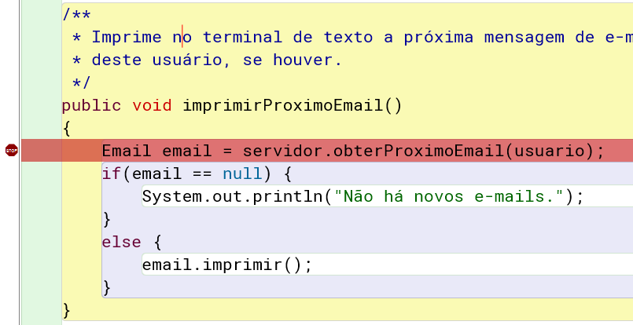
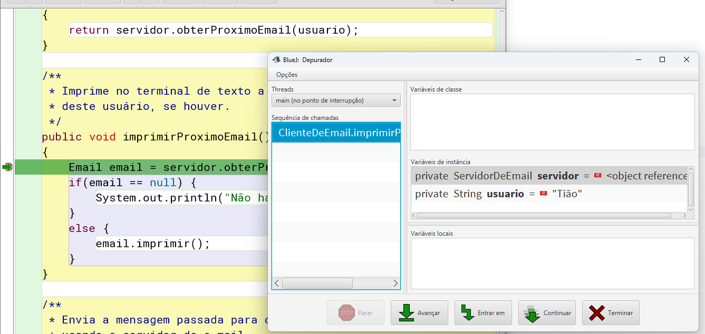

IPOO - Cap. 3 Interação entre Objetos
Aula 3.2 - Prática
DAC - ICET - Universidade Federal de Lavras
13/11/2024
Algumas coisas para relembrar e pensar:
- O que precisa ser feito antes das aulas práticas mesmo?
- E o que você precisa fazer para ter presença na aula prática?
Sobre essa aula
Na primeira parte da aula:
- vamos aprender a usar uma ferramenta muito útil para todo programador.
- Faremos isso sincronizando toda a turma.
Na segunda parte:
- Teremos exercícios práticos como de costume.
- Cada um fazendo no seu próprio passo.
Um outro exemplo de interação entre objetos
Na aula teórica vimos um exemplo de interação entre objetos, no projeto visor-relogio.
- Vimos que objetos podem criar objetos e chamar métodos de outros objetos
- Aprendemos isso usando leitura de código.
- Ler e entender código é uma habilidade fundamental.
- Um desenvolvedor de software faz isso durante toda a carreira.
- Mas, às vezes, vale muito a pena usar ferramentas adicionais.
- Para entender mais profundamente como um programa funciona.
Uma dessas ferramentas, que vamos aprender a usar agora, é o depurador (debugger).

Um depurador é um programa que permite que programadores possam executar seus programas um passo de cada vez.
- Geralmente ele tem uma função de parar e continuar a execução de um programa em um ponto específico do código.
- E permite examinar os valores das variáveis.
IDEs mais avançadas têm depuradores complexos, com inúmeras funcionalidades.
- Já o BlueJ tem um depurador que faz o básico:
- Parar o programa, executar uma linha de cada vez e ver os valores das variáveis.
- Mesmo sendo “só isso”, é uma mão na roda na hora de programar.

Acredite: a qualidade de vida de um programador muda de patamar quando ele passa a usar um depurador!
O exemplo do sistema de e-mail
Para aprender a usar o depurador, vamos trabalhar com o projeto de exemplo sistema-de-email.
- Por enquanto, não vamos avaliar o código.
- Vamos apenas executar o projeto e entender como ele funciona.
A ideia do projeto é simular o envio e recebimento de e-mails entre usuários.
- Um usuário usa um cliente de e-mail para enviar e-mails para um servidor.
- E outros usuários podem baixar seus e-mails do servidor.
Atividade em aula
Experimente a simulação do sistema de e-mails.
- Crie um objeto
ServidorDeEmail. - Crie um objeto
ClienteDeEmailpara um usuário, passando o servidor de e-mail criado. - Crie outro objeto
ClienteDeEmailpara outro usuário, passando o mesmo servidor de e-mail. - Experimente enviar e-mails de um usuário para outro (usando o método
enviarEmail);- e receber os e-mails (usando
obterProximoEmailouimprimirProximoEmail).
- e receber os e-mails (usando
- Experimente também criando mais clientes de e-mail.
Ao fazer o exercício anterior vimos que:
- O projeto tem três classes:
ServidorDeEmail,ClienteDeEmaileEmail. - Um objeto servidor de email deve ser criado primeiro para ser usado pelos clientes de e-mail.
- É ele quem cuida da troca de mensagens.
- Vários clientes de e-mail podem ser criados.
- Cada cliente de e-mail está associado a um nome de usuário.
- E-mails podem ser enviados de um cliente para outro usando um método da classe do cliente de e-mail.
- E-mails podem ser recebidos, um de cada vez, do servidor, usando um método da classe do cliente de e-mail.
- A classe
Emailnunca é instanciada explicitamente pelo usuário.- Ela é usada internamente pelos clientes de e-mail e pelo servidor para criar, armazenar e trocar mensagens.
Atividade em aula
Desenhe o diagrama de objetos representando a situação logo após a criação de um servidor de e-mail e três clientes de e-mail.
Não vamos analisar todo o código do projeto.
- A classe
ServidorDeEmailusa conceitos que veremos apenas mais adiante na disciplina.- Vamos então usar abstração, assumindo que ela faz o que tem que fazer sem nos preocuparmos em entender seus detalhes.
A classe Email é bem simples.
- Dê uma olhada no código e veja se tem alguma dúvida.
- Repare que, no construtor, ela usa algo do Java que não tínhamos visto ainda.
- A palavra-chave
this.
- A palavra-chave
Vamos avaliar a primeira linha do construtor.
- Repare que é um comando de atribuição.
- A variável do lado esquerdo (
this.remetente), recebe o valor da variável do lado direito (remetente).
- A variável do lado esquerdo (
- Precisarmos usar
thisaqui por causa da sobrecarga de nomes.- Um mesmo nome usado para coisas diferentes.
Quantos atributos a classe tem?
- 3 (
remetente,destinatarioemensagem).
E quantos parâmetros o construtor tem?
- 3 (também chamados
remetente,destinatarioemensagem).
Portanto, de quantas variáveis estamos falando?
- 6 (3 parâmetros + 3 atributos).
- Repare que apesar de terem o mesmo nome, os atributos e os parâmetros são coisas diferentes.
Suponha que tivéssemos a linha de código destacada abaixo no construtor:
Seria exibido o valor do atributo remetente ou do parâmetro remetente?
- A especificação da linguagem Java indica o uso do escopo mais próximo.
- O parâmetro foi declarado no construtor, e o atributo na classe.
- Logo, o parâmetro foi declarado “mais perto” da linha de código.
- Portanto, na linha de código acima, estamos referenciando o parâmetro
remetente.
Portanto, para inicializarmos o atributo remetente precisamos de uma maneira de conseguir referenciá-lo.
- E é justamente para isso que a palavra-chave
thisserve.
this é uma referência para o próprio objeto que está tendo seu método executado.
- Assim,
this.remetentese refere ao atributoremetentedo objeto atual.

O motivo de usarmos o mesmo nome é a legibilidade.
- Às vezes, encontramos o melhor nome para descrever uma variável.
- Como é o melhor nome, queremos usá-lo para nomear o parâmetro.
- Para facilitar para quem precisa chamar o construtor ou método.
- E, pelo mesmo motivo, queremos usá-lo também para nomear o atributo.
- Logo, precisamos do
thispara diferenciar um do outro.
- Logo, precisamos do
Usando um depurador
A classe mais interessante do sistema de e-mails é a de cliente de email.
- Vamos estudá-la em detalhes usando o depurador.
- Para isso, vamos preparar um cenário de uso.
Atividade em aula
Crie um servidor de e-mail, e depois crie dois clientes de e-mail para os usuários “Tião” e “Maria”. Dica use nomes de variáveis tiao e maria para os clientes de e-mail para facilitar.
Envie um e-mail da Maria para o Tião usando o método enviarEmail. Não leia a mensagem ainda!
Depois do exercício, o servidor tem um e-mail armazenado para o Tião, esperando para ser buscado.
- Você já sabe que o método
imprimirProximoEmailvai pegar esse e-mail e exibi-lo no terminal. - Vamos entender como isso funciona exatamente, usando o depurador.
Definindo pontos de parada (breakpoints)
Um breakpoint é uma marcação ligada a uma linha de código na qual o depurador para a execução do programa.
- No BlueJ você pode definir um breakpoint selecionando uma linha e teclando
Ctrl+B.- Ou clicando na barra na margem esquerda da linha.
- Aparece um marcador indicando que o breakpoint foi criado. 
- Obs.: a classe precisa estar compilada para que você consiga fazer isso.
- Você pode remover o breakpoint clicando no marcador.
Atividade em aula
Crie um breakpoint na primeira linha do método imprimirProximoEmail.
Agora chame o método imprimirProximoEmail do cliente de e-mail do Tião.
- O que acontece?
A janela do depurador do BlueJ é exibida.

Do lado direito da janela do depurador podemos observar que:
- Não há variáveis de classe (estáticas).
- Veremos esse conceito mais adiante na disciplina.
- Vemos as variáveis de instância.
- Ou seja, os atributos do objeto que teve o método chamado.
- O servidor: uma referência para o objeto do servidor.
- E o usuário: a string “Tião”.
- Ou seja, os atributos do objeto que teve o método chamado.
- E ainda não há variáveis locais.
- Isso porque a linha do breakpoint ainda não foi executada.
- O programa parou antes de executar essa linha.
Veja então que o depurador nos permite parar a execução do programa, ver os valores as variáveis
- e, especialmente, a partir de agora executar o programa passo a passo.
Depuração passo a passo
Na parte inferior da janela do depurador há botões que nos permitem controlar a execução do programa.
Atividade em aula
Use o botão Avançar uma vez para executar uma linha do método imprimirProximoEmail.
Veja que, no editor de código, a linha destacada agora é a próxima linha.
- E, na janela do depurador, vemos que a variável local
emailfoi criada.- Você pode, inclusive, clicar duas vezes na variável para inspecionar o objeto.
Atividade em aula
Antes de continuar, advinhe qual será a próxima linha a ser executada. Depois, clique novamente em Avançar e veja se tinha acertado. Tente entender porque você acertou ou errou.
Podemos agora clicar em Avançar repetidamente até terminar o método.
- Com isso conseguimos acompanhar o fluxo de execução do nosso programa.
- Isso é especialmente interessante em comandos condicionais (blocos if-else).
- Pois podemos entender e/ou confirmar qual bloco de código foi executado.
Atividade em aula
Chame novamente o método imprimirProximoEmail do cliente de e-mail do Tião. Avance a execução passo a passo e observe o que acontece dessa vez. Explique porque o fluxo de execução foi diferente.
Entrando em métodos
Ao depurarmos as chamadas do método imprimirProximoEmail, você deve ter notado duas chamadas de métodos externos.
Na linha abaixo, é chamado um método do objeto servidor.
- Na declaração dos atributos, vemos que o objeto é do tipo
ServidorDeEmail. - Portanto, o objeto da classe cliente de e-mail está chamando o método
obterProximoEmaildo objeto servidor de e-mail.
Já na linha abaixo, o método imprimir é chamado para o objeto email.
- E na primeira linha do método
imprimirProximoEmail, vemos queemailé uma variável local do tipoEmail. - Portanto, o objeto da classe cliente de e-mail está chamando o método
imprimirdo objeto e-mail.
Veja que, ao usar o botão Avançar, estamos usando abstração.
- Isso porque estamos enxergando o método
imprimir, por exemplo, como um único comando. - E vimos que o efeito dele é imprimir os detalhes da mensagem no terminal.
Mas se estivermos interessados em mais detalhes, podemos aprofundar a análise.
- E ver a execução passo a passo do próprio método
imprimir. - Podemos fazer isso no BlueJ usando o botão Entrar em.
- Com essa opção, a execução entrará no método sendo chamado e parará na primeira linha dele.
Atividade em aula
Refaça o cenário anterior, no qual Maria enviou uma mensagem para Tião e ele ainda não a leu.
Chame o método imprimirProximoEmail para o cliente de e-mail do Tião novamente.
Use o botão Avançar até chegar na linha: email.imprimir().
Chegando nela, use o botão Entrar em em vez de Avançar.
O que você observa? Explique o que vê?
Revisitando as chamadas de métodos
Nos exercícios anteriores vimos um objeto chamando método de outro objeto.
- Nós podemos usar o depurador também para exarminarmos um objeto criando outro objeto.
Exercício
Crie um breakpoint na primeira linha do método enviarEmail da classe ClienteDeEmail e, em seguida, chame o método.
Use o botão Entrar em para entrar no construtor do objeto e-mail.
Na janela do depurador observe que os atributos e os parâmetros têm os mesmos nomes. Execute o programa passo a passo para ver os atributos sendo inicializados um a um.
Exercício
Use o depurador para investigar o método inserirDinheiro do projeto maquina-ingressos-melhor que vimos anteriormente.
Chame métodos de forma que consiga depurar a execução tanto do bloco if quanto do bloco else.
Exercícios de fixação
Exercício 1.1
Adicione um assunto (string) nas mensagens de e-mail do projeto sistema-de-email.
Não se esqueça de garantir que o assunto do e-mail seja exibido ao imprimir um e-mail. Modifique a classe ClienteDeEmail conforme necessário.
Teste suas alterações!
Exercício 1.2
Vamos agora simular o envio de arquivos anexados a um e-mail, aproveitando para reforçar o conceito de sobrecarga de métodos e construtores.
Para isso, siga cuidadosamente as instruções abaixo:
- Adicione um atributo
anexo, do tipo String, para as mensagens de e-mail.- Vamos simular que existe um arquivo anexo guardando apenas o nome do arquivo nesse atributo.
- Crie um construtor sobrecarregado na classe
Emailque receba o anexo (além, é claro, de todas as informações do construtor original). - No construtor original, inicialize o anexo com string vazia.
- Crie um método de acesso para o atributo
anexo. - Altere o método
imprimirpara que o anexo seja exibido. - Na classe
ClienteDeEmail, crie uma versão sobrecarregada do métodoenviarEmailque receba o anexo.
Teste suas alterações!
No próximo exercício você precisará utilizar uma estrutura de repetição.
- É interessante então que saiba que, em Java, a sintaxe das estruturas de repetição for, while e do while é a mesma de C++.
Exercício 1.3
Nosso sistema de e-mails permite imprimir um e-mail por vez, mas seria interessante se pudéssemos ver todos os nossos e-mails de uma vez.
Crie então um método imprimirTodosEmails na classe ClienteDeEmail que permita fazer isso.
- Você precisará usar a palavra-chave
nullque é o valor de uma variável que não referencia nenhum objeto. - Use alguma forma de separação entre um e-mail e outro.
- Ex.: imprimindo a string
"---------"entre os e-mails.
- Ex.: imprimindo a string
- Ao final exiba quantos e-mails foram impressos.
Não se esqueça de testar suas alterações!
Exercício 1.4
Suponha que você tenha muitos e-mails para receber mas está interessado em ler apenas os e-mails de um remetente específico.
Altere o método imprimirTodosEmails acrescentando um parâmetro remetente.
- Se o valor do parâmetro for
nullou string vazia, o método deve continuar imprimindo todos os e-mails como já fazia antes. - Caso contrário, exiba apenas os e-mails do remetente recebido por parâmetro.
Veja que você precisará chamar um método do objeto email que permita obter o remetente do e-mail e compará-lo ao parâmetro recebido.
- Para fazer a comparação, use o método
equalsda classe String, que permite comparar o conteúdo de duas strings.- Ex.:
string1.equals(string2)retornatruese as duas strings forem iguais. - Atenção: em Java não podemos comparar strings usando
==, pois nem sempre funciona como se esperaria.
- Ex.:
Terminou? Se não tiver testado, ainda não terminou ;)
Exercício 1.5
Crie um método imprimirTodosEmailsPorAssunto que permita imprimir apenas os e-mails com determinado assunto.
A ideia é parecida com o que fizemos antes, para os remetentes, mas com as seguintes diferenças:
- O método deve aceitar apenas parte do assunto a ser considerado.
- O método deve ignorar maiúsculas/minúsculas.
- Por ex.: se chamarmos o método passando
"poo"como parâmetro, os dois primeiros e-mails abaixo seriam exibidos, mas o terceiro não.- Assunto do e-mail 1:
"Notas de Poo" - Assunto do e-mail 2:
"IPOO: videoaulas" - Assunto do e-mail 3:
"Rebobina Aí!"
- Assunto do e-mail 1:
Para fazer esse exercício, pesquise na internet sobre os métodos contains e toLowerCase da classe String.
Não se esqueça de testar suas alterações!
Entrega no Campus Virtual
Acesse, no Campus Virtual, a atividade correspondente a essa parte dos exercícios e envie o código do projeto sistema-de-emails da forma que ficou após as suas alterações (compacte a pasta em um arquivo .zip para enviar).
Exercício 2.1
Altere a classe VisorDeRelogio do projeto visor-relogio para que o relógio exiba os segundos, além das horas e dos minutos.
Obs.: com essa alteração o método tiqueTaque deveria ser chamado a cada segundo, em vez de a cada minuto.
(Opcional) Exercício 2.2 Desafio
No design atual do projeto visor-relogio, um objeto VisorDeRelogio é responsável por detectar quando um objeto VisorDeNumero voltou para zero e, em seguida, informar outro objeto VisorDeNumero para incrementar. Em outras palavras, não há ligação direta entre objetos VisorDeNumero.
Seria possível que um objeto VisorDeNumero informasse outro que ele voltou para zero e que este, por sua vez, deveria ser incrementado?
Por exemplo, seria possível que o objeto minutos informasse ao objeto horas que outra hora se passou ou fazer com que o objeto segundos informasse ao objeto minutos que outros sessenta segundos se passaram?
- O método
tiqueTaquedeveria interagir com quais objetos? - O que o objeto
horasdeveria fazer quando um dia inteiro tivesse passado?
Explique os problemas envolvidos neste design alternativo e, se você realmente sentir vontade de se desafiar, tente implementá-lo!
Entrega no Campus Virtual
Acesse, no Campus Virtual, a atividade correspondente a essa parte dos exercícios e envie o código do projeto visor-relogio da forma que ficou após as suas alterações (compacte a pasta em um arquivo .zip para enviar).